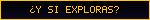

Leo (Disponible)
<Si tienes sitio, agrégame ✦>
Inspiración
- Channel Onion El sitio que me hizo querer rehacer el mío: espacio, GIFs y toda la estética de old web.
- Naomi's Wii Channel Un sitio al estilo de menú de Wii, con tarjeta tipo Mii.
- sniper422 Arte ASCII, button walls y blinkies.
- wiggle.monster Un directorio de sitios personales, cada uno con su botón.
Herramientas
- blinkies.cafe Para hacer tus propios blinkies.
- GifCities Los GIFs de GeoCities, rescatados por el Internet Archive.
- Neocities Donde vive este sitio.
Archivos y rarezas
- Frutiger Aero Archive Todo sobre la estética del liquid crystal.
- The Cutting Room Floor Contenido oculto y cortado de videojuegos.
- Internet Archive La memoria de la web.
No conectados
- ¿Tu sitio? Déjamelo en el libro de visitas.
